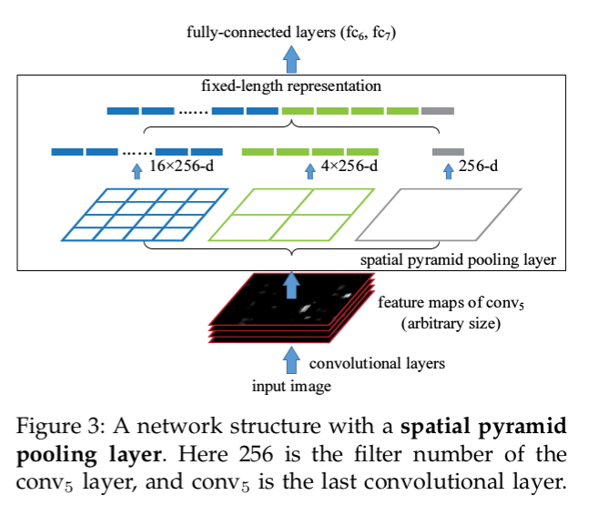
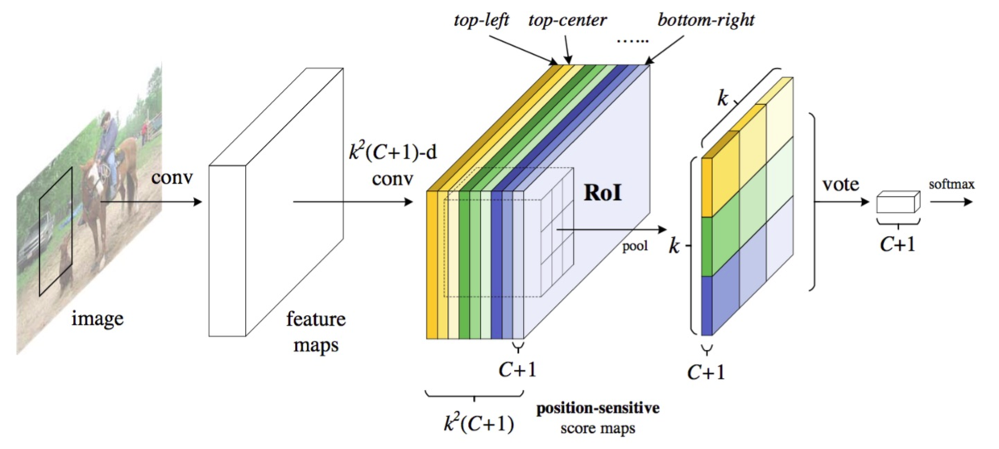
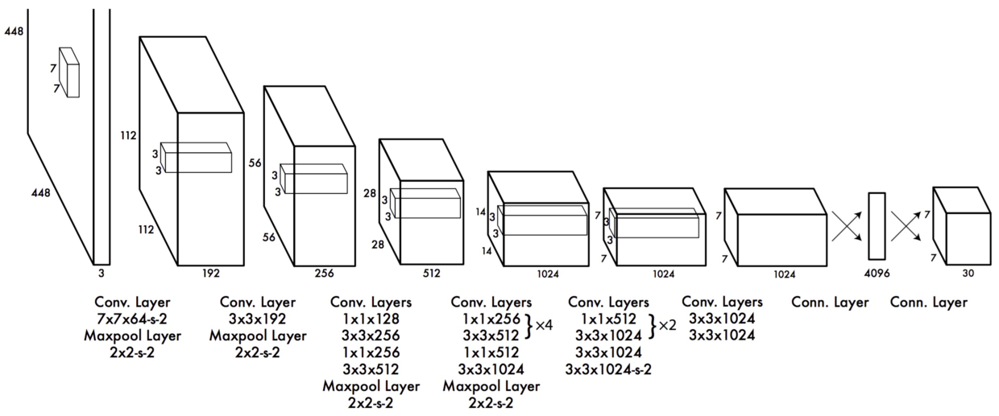
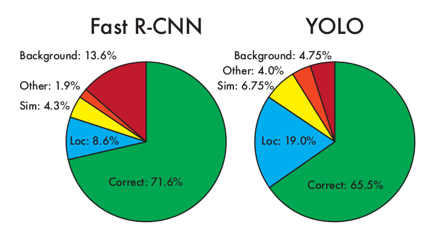
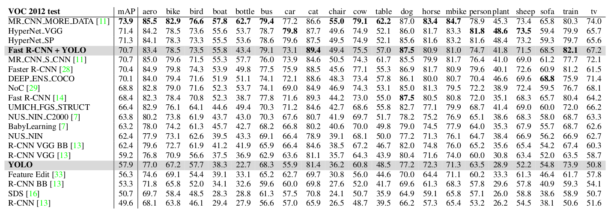
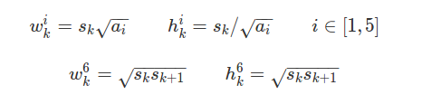
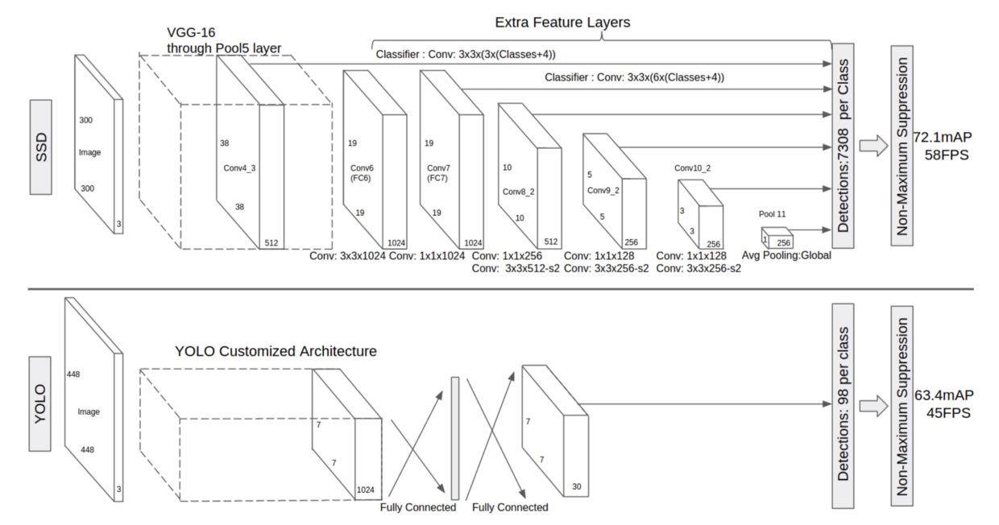

Index
本文部分转载自：深度学习检测方法梳理，原作者venus024，但是额外补充了一些其他相关内容，仅供学习交流使用，不得用于商业途径，转载请联系作者并注明出处，谢谢。
1. RCNN
论文出处：Rich feature hierarchies for accurate object detection and semantic segmentation
论文作者：Ross Girshick, Jeff Donahue, Trevor Darrell, Jitendra Malik
- 技术路线：selective search + CNN + SVMs
早期，使用窗口扫描进行物体识别，计算量大。 RCNN去掉窗口扫描，用聚类方式，对图像进行分割分组，得到多个侯选框的层次组。

Step1:候选框提取(selective search)
- 训练：给定一张图片，利用seletive search方法从中提取出2000个候选框。由于候选框大小不一，考虑到后续CNN要求输入的图片大小统一，将2000个候选框全部resize到227*227分辨率（为了避免图像扭曲严重，中间可以采取一些技巧减少图像扭曲）。
- 测试：给定一张图片，利用seletive search方法从中提取出2000个候选框。由于候选框大小不一，考虑到后续CNN要求输入的图片大小统一，将2000个候选框全部resize到227*227分辨率（为了避免图像扭曲严重，中间可以采取一些技巧减少图像扭曲）。
Step2:特征提取(CNN)
- 训练：提取特征的CNN模型需要预先训练得到。训练CNN模型时，对训练数据标定要求比较宽松，即SS方法提取的proposal只包含部分目标区域时，我们也将该proposal标定为特定物体类别。这样做的主要原因在于，CNN训练需要大规模的数据，如果标定要求极其严格（即只有完全包含目标区域且不属于目标的区域不能超过一个小的阈值），那么用于CNN训练的样本数量会很少。因此，宽松标定条件下训练得到的CNN模型只能用于特征提取。
- 测试：得到统一分辨率227*227的proposal后，带入训练得到的CNN模型，最后一个全连接层的输出结果—4096*1维度向量即用于最终测试的特征。
Step3:分类器(SVMs)
- 训练：对于所有proposal进行严格的标定（可以这样理解，当且仅当一个候选框完全包含ground truth区域且不属于ground truth部分不超过e.g,候选框区域的5%时认为该候选框标定结果为目标，否则为背景），然后将所有proposal经过CNN处理得到的特征和SVM新标定结果输入到SVMs分类器进行训练得到分类器预测模型。
- 测试：对于一副测试图像，提取得到的2000个proposal经过CNN特征提取后输入到SVM分类器预测模型中，可以给出特定类别评分结果。
- 结果生成：得到SVMs对于所有Proposal的评分结果，将一些分数较低的proposal去掉后，剩下的proposal中会出现候选框相交的情况。采用非极大值抑制技术，对于相交的两个框或若干个框，找到最能代表最终检测结果的候选框。
R-CNN需要对SS提取得到的每个proposal进行一次前向CNN实现特征提取，因此计算量很大，无法实时。此外，由于全连接层的存在，需要严格保证输入的proposal最终resize到相同尺度大小，这在一定程度造成图像畸变，影响最终结果。
2. SPP-Net
论文出处：Spatial Pyramid Pooling in Deep Convolutional Networks for Visual Recognition
论文作者：Kaiming He, Xiangyu Zhang, Shaoqing Ren, Jian Sun
GitHub参考： https://github.com/ShaoqingRen/SPP_net
传统CNN和SPP-Net流程对比如下图(图片来自这里)所示：

SPP-net具有以下特点：
- 传统CNN网络中，卷积层对输入图像大小不作特别要求，但全连接层要求输入图像具有统一尺寸大小。因此，在R-CNN中，对于selective search方法提出的不同大小的proposal需要先通过Crop操作或Wrap操作将proposal区域裁剪为统一大小，然后用CNN提取proposal特征。相比之下，SPP-net在最后一个卷积层与其后的全连接层之间添加了一个SPP (spatial pyramid pooling) layer，从而避免对propsal进行Crop或Warp操作。总而言之，SPP-layer适用于不同尺寸的输入图像，通过SPP-layer对最后一个卷积层特征进行pool操作并产生固定大小feature map,进而匹配后续的全连接层。
- 由于SPP-net支持不同尺寸输入图像，因此SPP-net提取得到的图像特征具有更好的尺度不变性，降低了训练过程中的过拟合可能性。
- R-CNN在训练和测试是需要对每一个图像中每一个proposal进行一遍CNN前向特征提取，如果是2000个propsal,需要2000次前向CNN特征提取。但SPP-net只需要进行一次前向CNN特征提取，即对整图进行CNN特征提取，得到最后一个卷积层的feature map，然后采用SPP-layer根据空间对应关系得到相应proposal的特征。SPP-net速度可以比R-CNN速度快24~102倍，且准确率比R-CNN更高（下图引自SPP-net原作论文，可以看到SPP-net中spp-layer前有5个卷积层，第5个卷积层的输出特征在位置上可以对应到原来的图像，例如第一个图中左下角车轮在其conv5的图中显示为“^”的激活区域，因此基于此特性，SPP-net只需要对整图进行一遍前向卷积，在得到的conv5特征后，然后用SPP-net分别提取相应proposal的特征）。

SPP-Layer原理：
在R-CNN中，conv5后是pool5。在SPP-net中，用SPP-Layer替代原来的pool5，其目标是为了使不同大小输入图像在经过SPP-Layer后得到的特征向量长度相同。其原理如图如下所示：

SPP与金字塔pooling类似，即我们先确定最终pooling得到的feature map大小，例如4*4 bins，3*3 bins，2*2 bins，1*1 bins。那么我们已知conv5输出的feature map大小（例如，256个13*13的feature map）。那么，对于一个13*13的feature map,我们可以通过spatial pyramid pooling （SPP）的方式得到输出结果：当window=ceil(13/4)=4, stride=floor(13/4)=3,可以得到的4*4 bins；当window=ceil(13/3)=5, stride=floor(13/3)=4,可以得到的3*3 bins；当window=ceil(13/2)=7, stride=floor(13/2)=6,可以得到的2*2 bins；当window=ceil(13/1)=13, stride=floor(13/1)=13,可以得到的1*1 bins.因此SPP-Layer后的输出是256*（4*4+3*3+2*2+1*1）=256*30长度的向量。不难看出，SPP的关键实现在于通过conv5输出的feature map宽高和SPP目标输出bin的宽高计算spatial pyramid pooling中不同分辨率Bins对应的pooling window和pool stride尺寸。
原作者在训练时采用两种不同的方式，即 1.采用相同尺寸的图像训练SPP-net, 2.采用不同尺寸的图像训练SPP-net。实验结果表明：使用不同尺寸输入图像训练得到的SPP-Net效果更好。
SPP-Net +SVM训练：
采用selective search可以提取到一系列proposals，由于已经训练完成SPP-Net,那么我们先将整图代入到SPP-Net中，得到的conv5的输出。接下来，区别于R-CNN，新方法不需要对不同尺寸的proposals进行Crop或Wrap，直接根据proposal在图中的相对位置关系计算得到proposal在整图conv5输出中的映射输出结果。这样，对于2000个proposal，我们事实上从conv1 —> conv5只做了一遍前向，然后进行2000次conv5 feature map的集合映射，再通过SPP-Layer，就可以得到2000组长度相同的SPP-Layer输出向量，进而通过全连接层生成最终2000个proposal的卷积神经网络特征。接下来就和R-CNN类似，训练SVMs时对于所有proposal进行严格的标定（可以这样理解，当且仅当一个候选框完全包含ground truth区域且不属于ground truth部分不超过e.g,候选框区域的5%时认为该候选框标定结果为目标，否则为背景），然后将所有proposal经过CNN处理得到的特征和SVM新标定结果输入到SVMs分类器进行训练得到分类器预测模型。
当然，如果觉得SVM训练很麻烦，可以直接在SPP-Net后再加一个softmax层，用好的标定结果去训练最后的softmax层参数。
- 拓展阅读：RCNN SPP_net
3. Fast RCNN
论文出处：Fast R-CNN
论文作者：Ross Girshick
基于R-CNN和SPP-Net思想，RBG提出了Fast R-CNN算法。如果选用VGG16网络进行特征提取，在训练阶段，Fast R-CNN的速度相比R-CNN和SPP-Net可以分别提升9倍和3倍；在测试阶段，Fast R-CNN的速度相比R-CNN和SPP-Net可以分别提升213倍和10倍。
R-CNN和SPP-Net缺点：
- R-CNN和SPP-Net的训练过程类似，分多个阶段进行，实现过程较复杂。这两种方法首先选用Selective Search方法提取proposals,然后用CNN实现特征提取，最后基于SVMs算法训练分类器，在此基础上还可以进一步学习检测目标的bounding box。
- R-CNN和SPP-Net的时间成本和空间代价较高。SPP-Net在特征提取阶段只需要对整图做一遍前向CNN计算，然后通过空间映射方式计算得到每一个proposal相应的CNN特征；区别于前者，R-CNN在特征提取阶段对每一个proposal均需要做一遍前向CNN计算，考虑到proposal数量较多（~2000个），因此R-CNN特征提取的时间成本很高。R-CNN和SPP-Net用于训练SVMs分类器的特征需要提前保存在磁盘，考虑到2000个proposal的CNN特征总量还是比较大，因此造成空间代价较高。
- R-CNN检测速度很慢。R-CNN在特征提取阶段对每一个proposal均需要做一遍前向CNN计算，如果用VGG进行特征提取，处理一幅图像的所有proposal需要47s。
- 特征提取CNN的训练和SVMs分类器的训练在时间上是先后顺序，两者的训练方式独立，因此SVMs的训练Loss无法更新SPP-Layer之前的卷积层参数，因此即使采用更深的CNN网络进行特征提取，也无法保证SVMs分类器的准确率一定能够提升。
Fast R-CNN亮点：
- Fast R-CNN检测效果优于R-CNN和SPP-Net；
- 训练方式简单，基于多任务Loss,不需要SVM训练分类器；
- Fast R-CNN可以更新所有层的网络参数（采用ROI Layer将不再需要使用SVM分类器，从而可以实现整个网络端到端训练）；
- 不需要将特征缓存到磁盘。
Fast R-CNN架构：
Fast R-CNN的架构如下图所示（可以参考此链接理解网络模型）：输入一幅图像和Selective Search方法生成的一系列Proposals，通过一系列卷积层和Pooling层生成feature map，然后用RoI（region of ineterst）层处理最后一个卷积层得到的feature map为每一个proposal生成一个定长的特征向量roi_pool5。RoI层的输出roi_pool5接着输入到全连接层产生最终用于多任务学习的特征并用于计算多任务Loss。全连接输出包括两个分支：1.SoftMax Loss ：计算K+1类的分类Loss函数，其中K表示K个目标类别，1表示背景；2.Regression Loss ：即K+1的分类结果相应的proposal的bounding box四个角点坐标值。最终将所有结果通过非极大抑制(NMS)处理产生最终的目标检测和识别结果。

3.1 RoI Pooling Layer
事实上，RoI Pooling Layer是SPP-Layer的简化形式。SPP-Layer是空间金字塔Pooling层，包括不同的尺度；RoI Layer只包含一种尺度，如论文中所述7*7。这样对于RoI Layer的输入（r,c,h,w），RoI Layer首先产生7*7个r*c*(h/7)*(w/7)的Block(块)，然后用Max-Pool方式求出每一个Block的最大值，这样RoI Layer的输出是r*c*7*7。
3.2 预训练网络初始化
RBG复用了VGG训练ImageNet得到的网络模型，即VGG16模型以初始化Fast R-CNN中RoI Layer以前的所有层。Fast R-CNN的网络结构整体可以总结如下：13个convolution layers + 4个pooling layers + RoI layer + 2个fc layer + 2个parrel层（即Softmax Loss layer和Smooth L1 Loss layer）。在Fast R-CNN中，原来VGG16中第5个pooling layer被新的RoI layer替换掉。
3.3 Finetuning for detection
(1) fast r-cnn在网络训练阶段采用了一些trick，每个minibatch是由N幅图片（N=2）中提取得到的R个proposal（R=128）组成的。这种minibatch的构造方式比从128张不同图片中提取1个proposal的构造方式快64倍。虽然minibatch的构造速度加快，但也在一定程度上造成收敛速度减慢。此外，fast r-cnn摒弃了之前svm训练分类器的方式，而是选用softmax classifier和bounding-box regressors联合训练的方式更新cnn网络所有层参数。注意：在每2张图中选取128个proposals时，需要严格保证至少25%的正样本类（proposals与ground truth的IOU超过0.5），剩下的可全部视作背景类。在训练网络模型时，不需要任何其他形式的数据扩增操作。
(2) multi-task loss：fast r-cnn包括两个同等水平的sub-layer，分别用于classification和regression。其中，Softmax Loss对应于classification，Smooth L1 Loss对应于regression，两种Loss的权重比例为1:1。
(3) SGD hyer-parameters：用于softmax分类任务和bounding-box回归的fc层参数用标准差介于0.01~0.001之间的高斯分布初始化。
3.4 Truncated SVD快速检测
在检测段，RBG使用truncated SVD优化较大的FC层，这样RoI数目较大时检测端速度会得到的加速。
Fast R-CNN实验结论：
- multi-task loss训练方式能提高算法准确度；
- multi-scale图像训练fast r-cnn相比较single-scale图像训练相比对mAP的提升幅度很小，但是却增加了很高的时间成本。因此，综合考虑训练时间和mAP，作者建议直接用single尺度的图像训练fast r-cnn；
- 用于训练的图像越多，训练得到的模型准确率也会越高；
- Softmax Loss训练方式比SVMs训练得到的结果略好一点，因此无法证明Softmax Loss在效果上一定比svm强，但是简化了训练流程，无需分步骤训练模型；
- proposal并不是提取的越多效果越好，太多proposal反而导致mAP下降。
4. Faster RCNN
论文出处：Faster R-CNN: Towards Real-Time Object Detection with Region Proposal Networks
论文作者：Shaoqing Ren, Kaiming He, Ross Girshick, Jian Sun
在之前介绍的Fast R-CNN中，第一步需要先使用Selective Search方法提取图像中的proposals。基于CPU实现的Selective Search提取一幅图像的所有Proposals需要约2s的时间。在不计入proposal提取情况下，Fast R-CNN基本可以实时进行目标检测。但是，如果从端到端的角度考虑，显然proposal提取成为影响端到端算法性能的瓶颈。目前最新的EdgeBoxes算法虽然在一定程度提高了候选框提取的准确率和效率，但是处理一幅图像仍然需要0.2s。因此，Ren Shaoqing提出新的Faster R-CNN算法，该算法引入了RPN网络（Region Proposal Network）提取proposals。RPN网络是一个全卷积神经网络，通过共享卷积层特征可以实现proposal的提取，RPN提取一幅像的proposal只需要10ms.
Faster R-CNN算法由两大模块组成：1.PRN候选框提取模块，2.Fast R-CNN检测模块。其中，RPN是全卷积神经网络，用于提取候选框；Fast R-CNN基于RPN提取的proposal检测并识别proposal中的目标。

4.1 Region Proposal Network (RPN)
RPN网络的输入可以是任意大小（但还是有最小分辨率要求的，例如VGG是228*228）的图片。如果用VGG16进行特征提取，那么RPN网络的组成形式可以表示为VGG16+RPN。
VGG16 ：参考这个，可以看出VGG16中用于特征提取的部分是13个卷积层（conv1_1 —> conv5_3），不包括pool5及pool5后的网络层次结构。
RPN ：RPN是作者重点介绍的一种网络，如下图所示。RPN的实现方式：在conv5_3的卷积feature map上用一个n*n的滑窗（论文中作者选用了n=3，即3*3的滑窗）生成一个长度为256（对应于ZF网络）或512（对应于VGG网络）维长度的全连接特征。然后在这个256维或512维的特征后产生两个分支的全连接层：1.reg-layer，用于预测proposal的中心锚点对应的proposal的坐标x，y和宽高w，h；2.cls-layer，用于判定该proposal是前景还是背景。sliding window的处理方式保证reg-layer和cls-layer关联了conv5_3的全部特征空间。事实上，作者用全连接层实现方式介绍RPN层实现容易帮助我们理解这一过程，但在实现时作者选用了卷积层实现全连接层的功能。个人理解：全连接层本来就是特殊的卷积层，如果产生256或512维的fc特征，事实上可以用Num_out=256或512，kernel_size=3*3，stride=1的卷积层实现conv5_3到第一个全连接特征的映射。然后再用两个Num_out分别为2*9=18和4*9=36，kernel_size=1*1，stride=1的卷积层实现上一层特征到两个分支cls层和reg层的特征映射。注意：这里2*9中的2指cls层的分类结果包括前后背景两类，4*9的4表示一个Proposal的中心点坐标x，y和宽高w，h四个参数。采用卷积的方式实现全连接处理并不会减少参数的数量，但是使得输入图像的尺寸可以更加灵活。在RPN网络中，我们需要重点理解其中的anchors概念，Loss fucntions计算方式和RPN层训练数据生成的具体细节。

Anchors ：字面上可以理解为锚点，位于之前提到的n*n的sliding window的中心处。对于一个sliding window，我们可以同时预测多个proposal，假定有k个。k个proposal即k个reference boxes，每一个reference box又可以用一个scale，一个aspect_ratio和sliding window中的锚点唯一确定。所以，我们在后面说一个anchor，你就理解成一个anchor box 或一个reference box。作者在论文中定义k=9，即3种scale和3种aspect_ratio确定出当前sliding window位置处对应的9个reference boxes，4*k个reg-layer的输出和2*k个cls-layer的score输出。对于一幅W*H的feature map，对应W*H*k个锚点。所有的锚点都具有尺度不变性。
Anchor box的设置应比较好的覆盖到不同大小区域，如下图:

一张1000×600的图片，大概可以得到20k个anchor box(60×40×9)。
Loss functions ：在计算Loss值之前，作者设置了anchors的标定方法。正样本标定规则：1.如果Anchor对应的reference box与ground truth的IoU值最大，标记为正样本；2.如果Anchor对应的reference box与ground truth的IoU>0.7，标记为正样本。事实上，采用第2个规则基本上可以找到足够的正样本，但是对于一些极端情况，例如所有的Anchor对应的reference box与groud truth的IoU不大于0.7,可以采用第一种规则生成。负样本标定规则：如果Anchor对应的reference box与ground truth的IoU<0.3，标记为负样本。剩下的既不是正样本也不是负样本，不用于最终训练。训练RPN的Loss是有classification loss（即softmax loss）和regression loss（即L1 Loss）按一定比重组成的。计算softmax loss需要的是anchors对应的ground truth标定结果和预测结果，计算regression loss需要三组信息：1.预测框，即RPN网络预测出的proposal的中心位置坐标x，y和宽高w，h；2.锚点reference box:之前的9个锚点对应9个不同scale和aspect_ratio的reference boxes，每一个reference boxes都有一个中心点位置坐标x_a，y_a和宽高w_a，h_a。3.ground truth:标定的框也对应一个中心点位置坐标x*，y*和宽高w*，h*。因此计算regression loss和总Loss方式如下：


RPN训练设置 ：在训练RPN时，一个Mini-batch是由一幅图像中任意选取的256个proposal组成的，其中正负样本的比例为1:1。如果正样本不足128，则多用一些负样本以满足有256个Proposal可以用于训练，反之亦然。训练RPN时，与VGG共有的层参数可以直接拷贝经ImageNet训练得到的模型中的参数，剩下没有的层参数用标准差为0.01的高斯分布初始化。
4.2 RPN与Faster R-CNN特征共享
RPN在提取得到proposals后，作者选择使用Fast R-CNN实现最终目标的检测和识别。RPN和Fast R-CNN共用了13个VGG的卷积层，显然将这两个网络完全孤立训练不是明智的选择，作者采用交替训练阶段卷积层特征共享：
交替训练（Alternating training） ：Step1：训练RPN；Step2：用RPN提取得到的proposal训练Fast R-CNN；Step3：用Faster R-CNN初始化RPN网络中共用的卷积层。迭代执行Step1,2,3，直到训练结束为止，论文中采用的就是这种训练方式。注意：第一次迭代时，用ImageNet得到的模型初始化RPN和Fast R-CNN中卷积层的参数；从第二次迭代开始，训练RPN时，用Fast R-CNN的共享卷积层参数初始化RPN中的共享卷积层参数，然后只Fine-tune不共享的卷积层和其他层的相应参数。训练Fast-RCNN时，保持其与RPN共享的卷积层参数不变，只Fine-tune不共享的层对应的参数。这样就可以实现两个网络卷积层特征共享训练。相应的网络模型请参考这里。
4.3 深度挖掘
- 由于Selective Search提取得到的Proposal尺度不一，因此Fast RCNN或SPP-Net生成的RoI也是尺度不一，最后分别用RoI Pooling Layer或SPP-Layer处理得到固定尺寸金字塔特征，在这一过程中，回归最终proposal的坐标网络的权重事实上共享了整个Feature Map，因此其训练的网络精度也会更高。但是，RPN方式提取的ROI由k个锚点生成，具有k种不同分辨率，因此在训练过程中学习到了k种独立的回归方式。这种方式并没有共享整个Feature Map，但其训练得到的网络精度也很高。这，我竟然无言以对。有什么问题，请找Anchors同学。
- 采用不同分辨率图像在一定程度可以提高准确率，但是也会导致训练速度下降。采用VGG16训练RPN虽然使得第13个卷积层特征尺寸至少缩小到原图尺寸的1/16（事实上，考虑到kernel_size作用，会更小一些），然并卵，最终的检测和识别效果仍然好到令我无言以对。
- 三种scale(128*128，256*256，512*512)，三种宽高比（1:2，1:1，2:1）,虽然scale区间很大，总感觉这样会很奇怪，但最终结果依然表现的很出色。
- 训练时（例如600*1000的输入图像），如果reference box （即anchor box）的边界超过了图像边界，这样的anchors对训练Loss不产生影响，即忽略掉这样的Loss。一幅600*1000的图经过VGG16大约为40*60，那么anchors的数量大约为40*60*9，约等于20000个anchor boxes。去除掉与图像边界相交的anchor boxes后，剩下约6000个anchor boxes，这么多数量的anchor boxes之间会有很多重叠区域，因此使用非极值抑制方法将IoU>0.7的区域全部合并，剩下2000个anchor boxes（同理，在最终检测端，可以设置规则将概率大于某阈值P且IoU大于某阈值T的预测框（注意，和前面不同，不是anchor boxes）采用非极大抑制方法合并）。在每一个epoch训练过程中，随机从一幅图最终剩余的这些anchors采样256个anchor box作为一个Mini-batch训练RPN网络。
4.4 实验
- PASCAL VOC 2007：使用ZF-Net训练RPN和Fast R-CNN，那么Selective Search + Fast R-CNN, EdgeBox+Fast R-CNN， RPN+Fast R-CNN的准确率分别为：58.7%，58.6%，59.9%. Seletive Seach和EdgeBox方法提取2000个proposal，RPN最多提取300个proposal，因此卷积特征共享方式提取特征的RPN显然在效率是更具有优势；
- 采用VGG以特征不共享方式和特征共享方式训练RPN+Fast R-CNN,可以分别得到68.5%和69.9%的准确率（VOC2007）。此外，采用VGG训练RCNN时，需要花320ms提取2000个proposal，加入SVD优化后需要223ms，而Faster R-CNN整个前向过程（包括RPN+Fast R-CNN）总共只要198ms；
- Anchors的scales和aspect_ratio的数量虽然不会对结果产生明显影响，但是为了算法稳定性，建议两个参数都设置为合适的数值。
- 当Selective Search和EdgeBox提取的proposal数目由2000减少到300时，Faste R-CNN的Recall vs. IoU overlap ratio图中recall值会明显下降；但RPN提取的proposal数目由2000减少到300时，Recall vs. IoU overlap ratio图中recall值会比较稳定。
4.5 总结
特征共享方式训练RPN+Fast R-CNN能够实现极佳的检测效果，特征共享训练实现了买一送一，RPN在提取Proposal时不仅没有时间成本，还提高了proposal质量。因此Faster R-CNN中交替训练RPN+Fast R-CNN方式比原来的Slective Seach+Fast R-CNN更上一层楼。
5. R-FCN
论文出处：R-FCN: Object Detection via Region-based Fully Convolutional Networks
论文作者：Jifeng Dai, Yi Li, Kaiming He, Jian Sun
论文翻译：[译] 基于R-FCN的物体检测 (zhwhong)
RCNN系列(R-CNN、Fast R-CNN、Faster R-CNN)中，网络由两个子CNN构成。在图片分类中，只需一个CNN，效率非常高。所以物体检测是不是也可以只用一个CNN？
图片分类需要兼容形变，而物体检测需要利用形变，如何平衡？
R-FCN利用在CNN的最后进行位置相关的特征pooling来解决以上两个问题。

经普通CNN后，做有 k^2(C+1) 个 channel 的卷积，生成位置相关的特征(position-sensitive score maps)。
C 表示分类数，加 1 表示背景，k 表示后续要pooling 的大小，所以生成 k^2 倍的channel，以应对后面的空间pooling。

普通CNN后，还有一个RPN(Region Proposal Network)，生成候选框。
假设一个候选框大小为 w×h，将它投影在位置相关的特征上，并采用average-pooling的方式生成一个 k×k×k^2(C+1) 的块(与Fast RCNN一样)，再采用空间相关的pooling(k×k平面上每一个点取channel上对应的部分数据)，生成 k×k×(C+1)的块，最后再做average-pooling生成 C+1 的块，最后做softmax生成分类概率。
类似的，RPN也可以采用空间pooling的结构，生成一个channel为 4k^2的特征层。空间pooling的具体操作可以参考下面：

训练与SSD相似，训练时拿来做lost计算的点取一个常数，如128。 除去正点，剩下的所有使用概率最高的负点。
6. YOLO
论文出处：You Only Look Once: Unified, Real-Time Object Detection
论文作者：Joseph Redmon, Santosh Divvala, Ross Girshick, Ali Farhadi
项目主页：https://pjreddie.com/darknet/yolo/
Faster RCNN需要对20k个anchor box进行判断是否是物体，然后再进行物体识别，分成了两步。 YOLO则把物体框的选择与识别进行了结合，一步输出，即变成”You Only Look Once”。
YOLO是一个可以一次性预测多个Box位置和类别的卷积神经网络，能够实现端到端的目标检测和识别，其最大的优势就是速度快。事实上，目标检测的本质就是回归，因此一个实现回归功能的CNN并不需要复杂的设计过程。YOLO没有选择滑窗或提取proposal的方式训练网络，而是直接选用整图训练模型。这样做的好处在于可以更好的区分目标和背景区域，相比之下，采用proposal训练方式的Fast-R-CNN常常把背景区域误检为特定目标。当然,YOLO在提升检测速度的同时牺牲了一些精度。下图所示是YOLO检测系统流程：1.将图像Resize到448*448；2.运行CNN；3.非极大抑制优化检测结果。有兴趣的童鞋可以按照这个说明安装测试一下YOLO的scoring流程，非常容易上手。接下来将重点介绍YOLO的原理。

6.1 一体化检测方案
YOLO的设计理念遵循端到端训练和实时检测。YOLO将输入图像划分为S*S个网络，如果一个物体的中心落在某网格(cell)内，则相应网格负责检测该物体。在训练和测试时，每个网络预测B个bounding boxes，每个bounding box对应5个预测参数，即bounding box的中心点坐标(x,y)，宽高（w,h）和置信度评分。这里的置信度评分( Pr(Object)*IOU(pred|truth) )综合反映基于当前模型bounding box内存在目标的可能性Pr(Object)和bounding box预测目标位置的准确性IOU(pred|truth)。如果bouding box内不存在物体，则Pr(Object)=0。如果存在物体，则根据预测的bounding box和真实的bounding box计算IOU，同时会预测存在物体的情况下该物体属于某一类的后验概率Pr(Class_i|Object)。假定一共有C类物体，那么每一个网格只预测一次C类物体的条件类概率Pr(Class_i|Object)，i=1,2,…,C；每一个网格预测B个bounding box的位置。即这B个bounding box共享一套条件类概率Pr(Class_i|Object)，i=1,2,…,C。基于计算得到的Pr(Class_i|Object)，在测试时可以计算某个bounding box类相关置信度：Pr(Class_i|Object) * Pr(Object) * IOU(pred|truth) = Pr(Class_i) * IOU(pred|truth)。如果将输入图像划分为7*7网格（S=7），每个网格预测2个bounding box (B=2)，有20类待检测的目标（C=20），则相当于最终预测一个长度为S*S*(B*5+C)=7*7*30的向量，从而完成检测+识别任务，整个流程可以通过下图理解。

- 把缩放成统一大小的图片分割成S×S的单元格
- 每个单元格输出B个矩形框(冗余设计)，包含框的位置信息(x, y, w, h)与物体的Confidence
- 每个单元格再输出C个类别的条件概率P(Class∣Object)
- 最终输出层应有S×S×(B∗5+C)个单元
- 其中x、y是每个单元格的相对位置，w、h是整图的相对大小
Conficence定义如下:

(1) 网络设计
YOLO网络设计遵循了GoogLeNet的思想，但与之有所区别。YOLO使用了24个级联的卷积(conv)层和2个全连接(fc)层，其中conv层包括3*3和1*1两种Kernel，最后一个fc层即YOLO网络的输出，长度为S*S*(B*5+C)=7*7*30。此外，作者还设计了一个简化版的YOLO-small网络，包括9个级联的conv层和2个fc层，由于conv层的数量少了很多，因此YOLO-small速度比YOLO快很多。如下图所示我们给出了YOLO网络的架构。

(2) 训练
作者训练YOLO网络是分步骤进行的：首先，作者从上图网络中取出前20个conv层，然后自己添加了一个average pooling层和一个fc层，用1000类的ImageNet数据与训练。在ImageNet 2012上用224*224d的图像训练后得到的top5准确率是88%。然后，作者在20个预训练好的conv层后添加了4个新的conv层和2个fc层，并采用随即参数初始化这些新添加的层，在fine-tune新层时，作者选用448*448图像训练。最后一个fc层可以预测物体属于不同类的概率和bounding box中心点坐标x，y和宽高w，h。bounding box的宽高是相对于图像宽高归一化后得到的，bounding box的中心位置坐标是相对于某一个网格的位置坐标进行过归一化，因此x，y，w，h均介于0到1之间。
代价函数如下：

在设计Loss函数时，有两个主要的问题：1.对于最后一层长度为7*7*30长度预测结果，计算预测loss通常会选用平方和误差。然而这种Loss函数的位置误差和分类误差是1:1的关系。2.整个图有7*7个网格，大多数网格实际不包含物体（当物体的中心位于网格内才算包含物体），如果只计算Pr(Class_i)，很多网格的分类概率为0，网格loss呈现出稀疏矩阵的特性，使得Loss收敛效果变差，模型不稳定。为了解决上述问题，作者采用了一系列方案：
- 增加bounding box坐标预测的loss权重，降低bounding box分类的loss权重。坐标预测和分类预测的权重分别是λ_coord=5，λ_noobj=0.5。
- 平方和误差对于大和小的bounding box的权重是相同的，作者为了降低不同大小bounding box宽高预测的方差，采用了平方根形式计算宽高预测loss，即sqrt(w)和sqrt(h)。
训练Loss组成形式较为复杂，这里不作列举，如有兴趣可以参考作者原文慢慢理解体会。
(3) 测试
作者选用PASAL VOC图像测试训练得到的YOLO网络，每幅图会预测得到98个(7*7*2)个bouding box及相应的类概率。通常一个cell可以直接预测出一个物体对应的bounding box，但是对于某些尺寸较大或靠近图像边界的物体，需要多个网格预测的结果通过非极大抑制处理生成。虽然YOLO对于非极大抑制的依赖不及R-CNN和DPM，但非极大抑制确实可以将mAP提高2到3个点。
6.2 方法对比
作者将YOLO目标检测与识别方法与其他几种经典方案进行比较可知：
DPM(Deformable parts models) : DPM是一种基于滑窗方式的目标检测方法，基本流程包括几个独立的环节：特征提取，区域划分，基于高分值区域预测bounding box。YOLO采用端到端的训练方式，将特征提取、候选框预测，非极大抑制及目标识别连接在一起，实现了更快更准的检测模型。
R-CNN ：R-CNN方案分需要先用Seletive Search方法提取proposal,然后用CNN进行特征提取，最后用SVM训练分类器。如此方案，诚繁琐也！YOLO精髓思想与其类似，但是通过共享卷积特征的方式提取proposal和目标识别。另外，YOLO用网格对proposal进行空间约束，避免在一些区域重复提取Proposal，相较于Seletive Search提取2000个proposal进行R-CNN训练，YOLO只需要提取98个proposal，这样训练和测试速度怎能不快？
Fast R-CNN、Faster R-CNN、Fast DPM : Fast R-CNN和Faster R-CNN分别替换了SVMs训练和Selective Seach提取proposal的方式，在一定程度上加速了训练和测试速度，但其速度依然无法和YOLO相比。同理，将DPM优化在GPU上实现也无出YOLO之右。
6.3 实验
(1) 实时检测识别系统对比

(2) VOC2007准确率比较

(3) Fast-R-CNN和YOLO错误分析

如图所示，不同区域分别表示不同的指标：
- Correct：正确检测和识别的比例，即分类正确且IOU>0.5
- Localization：分类正确，但0.1<IOU<0.5
- Similar：类别相似，IOU>0.1
- Other：分类错误，IOU>0.1
- Background：对于任何目标IOU<0.1
可以看出，YOLO在定位目标位置时准确度不及Fast R-CNN。YOLO的error中，目标定位错误占据的比例最大，比Fast R-CNN高出了10个点。但是，YOLO在定位识别背景时准确率更高，可以看出Fast R-CNN假阳性很高（Background=13.6%，即认为某个框是目标，但是实际里面不含任何物体）。
(4) VOC2012准确率比较

由于YOLO在目标检测和识别是处理背景部分优势更明显，因此作者设计了Fast R-CNN+YOLO检测识别模式，即先用R-CNN提取得到一组bounding box，然后用YOLO处理图像也得到一组bounding box。对比这两组bounding box是否基本一致，如果一致就用YOLO计算得到的概率对目标分类，最终的bouding box的区域选取二者的相交区域。Fast R-CNN的最高准确率可以达到71.8%，采用Fast R-CNN+YOLO可以将准确率提升至75.0%。这种准确率的提升是基于YOLO在测试端出错的情况不同于Fast R-CNN。虽然Fast R-CNN_YOLO提升了准确率，但是相应的检测识别速度大大降低，因此导致其无法实时检测。
使用VOC2012测试不同算法的mean Average Precision，YOLO的mAP=57.9%，该数值与基于VGG16的RCNN检测算法准确率相当。对于不同大小图像的测试效果进行研究，作者发现：YOLO在检测小目标时准确率比R-CNN低大约8~10%，在检测大目标是准确率高于R-CNN。采用Fast R-CNN+YOLO的方式准确率最高，比Fast R-CNN的准确率高了2.3%。
5.4 总结
YOLO是一种支持端到端训练和测试的卷积神经网络，在保证一定准确率的前提下能图像中多目标的检测与识别。
7. YOLO2
论文出处：YOLO9000: Better, Faster, Stronger
论文作者：Joseph Redmon, Ali Farhadi
项目主页：https://pjreddie.com/darknet/yolo/
时隔一年，YOLO（You Only Look Once: Unified, Real-Time Object Detection）从v1版本进化到了v2版本，作者在darknet主页先行一步放出源代码，论文在我们等候之下终于在12月25日发布出来，本文对论文重要部分进行了翻译理解工作，不一定完全对，如有疑问，欢迎讨论。博主如果有新的理解，也会更新文章，或者新写一篇。
新的YOLO版本论文全名叫“YOLO9000: Better, Faster, Stronger”，主要有两个大方面的改进：
- 第一，作者使用了一系列的方法对原来的YOLO多目标检测框架进行了改进，在保持原有速度的优势之下，精度上得以提升。VOC 2007数据集测试，67FPS下mAP达到76.8%，40FPS下mAP达到78.6%，基本上可以与Faster R-CNN和SSD一战。
- 第二，作者提出了一种目标分类与检测的联合训练方法，通过这种方法，YOLO9000可以同时在COCO和ImageNet数据集中进行训练，训练后的模型可以实现多达9000种物体的实时检测。
更多内容请参考：
8. SSD
YOLO在 7×7 的框架下识别物体，遇到大量小物体时，难以处理。
SSD则在不同层级的feature map下进行识别，能够覆盖更多范围。

假设在 m 层 feature map 上进行识别，则第 k 层的基本比例为

比如 s_min=0.2，s_max=0.95，表示整张图片识别物体所占比最小 0.2，最大 0.95。
在基本比例上，再取多个长宽比，令 a={1, 2, 3, 1/2, 1/3}，长宽分别为：

Match策略上，取ground truth与以上生成的格子重叠率大于0.5的。
9. SSD vs YOLO

位置采用Smooth L1 Regression，分类采用Softmax。
代价函数为：
$$
L = L_{conf}(x, c) + \alpha \cdot L_{loc}(c, l, g)
$$
x 表示类别输出，c 表示目标分类，l 表示位置输出，g 表示目标位置, α是比例常数，可取1。
训练过程中负点远多于正点，所以只取负点中，概率最大的几个，数量与正点成 3:1 。
10. NMS
论文出处：Efficient Non-Maximum Suppression
发表于：Pattern Recognition, 2006. ICPR 2006. 18th International Conference on
以上方法，同一物体可能有多个预测值。
可用NMS(Non-maximum suppression，非极大值抑制)来去重。

如上图所示，一共有6个识别为人的框，每一个框有一个置信率。
现在需要消除多余的:
- 按置信率排序: 0.95，0.9，0.9，0.8，0.7，0.7；
- 取最大0.95的框为一个物体框；
- 剩余5个框中，去掉与0.95框重叠率大于0.6(可以另行设置)，则保留0.9，0.8，0.7三个框；
- 重复上面的步骤，直到没有框了，0.9为一个框；
- 选出来的为: 0.95，0.9。
两个矩形的重叠率计算方式如下:

补充阅读：
11. xywh VS xyxy
系列论文中，位置都用 (x,y,w,h)来表示，没有用左上角、右下角 (x,y,x,y) 来表示。
初衷是当 (w,h)正确时，(x,y) 一点错，会导致整个框就不准了。
在初步的实际实验中，(x,y,x,y) 效果要差一些。
背后的逻辑，物体位置用 (x,y,w,h) 来学习比较容易。
(x,y) 只需要位置相关的加权就能计算出来；
(w,h) 就更简单了，直接特征值相加即可。
Reference
- 深度学习检测方法梳理
- RCNN-> SPP net -> Fast RCNN -> Faster RCNN
- 深度学习进行目标识别的资源列表
- 图像语义分割之FCN和CRF
- Object Detection
- Detection
- [Detection] CNN 之 “物体检测” 篇
- [译] 基于R-FCN的物体检测 (zhwhong)
(本文部分转载自：深度学习检测方法梳理，原作者venus024，但是额外补充了一些其他相关内容，仅供学习交流使用，不得用于商业途径，转载请联系作者并注明出处，谢谢。)